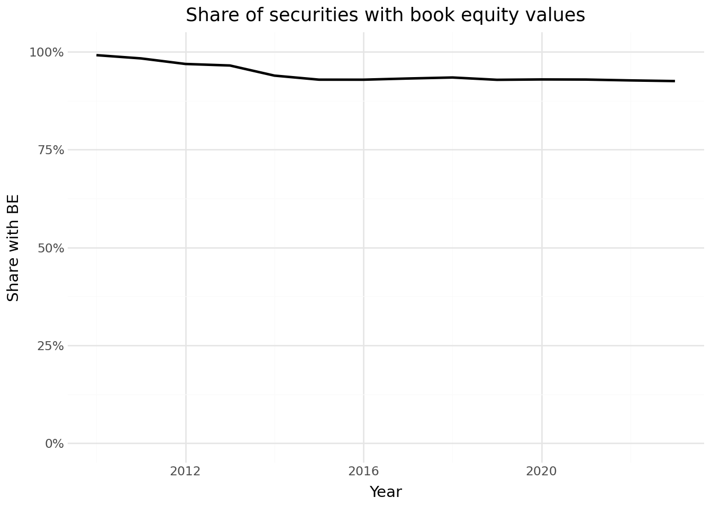

import pandas as pd
import numpy as np
import tidyfinance as tf
import sqlite3
from plotnine import *
from mizani.formatters import comma_format, percent_format
from datetime import datetime
tidy_finance = sqlite3.connect(database="data/tidy_finance_python.sqlite")8 DataCore Data
This chapter shows how to connect to DataCore a provider of financial and economic data for research applications. We use this connection to download the most commonly used data for stock and firm characteristics (i.e., Stock Data and Public Companies). Unfortunately, this data is not freely available, but most students and researchers typically have access to DataCore through their university libraries. Assuming that you have access to DataCore, we show you how to prepare and merge the databases and store them in the SQLite database introduced in the previous chapter. We conclude this chapter by providing some tips for working with the DataCore database.
If you don’t have access to DataCore but still want to run the code in this book, we refer to DataCore Demo Data, where we show how to create a dummy database that contains the DataCore tables and corresponding columns. With this database at hand, all code chunks in this book can be executed with this dummy database.
First, we load the Python packages that we use throughout this chapter. Later on, we load more packages in the sections where we need them. The last two packages are used for plotting.
We use the same date range as in the previous chapter to ensure consistency. However, we have to use the date format that the DataCore database expects.
start_date = "01/01/1960"
end_date = "12/31/2024"8.1 Accessing DataCore
DataCore is the most widely used source for asset and firm-specific financial data used in academic settings. DataCore is a data platform that provides data validation, flexible delivery options, and access to many different data sources.
8.2 Preparing Company Fundamentals Data
Firm accounting data are an important source of information that we use in portfolio analyses in subsequent chapters.
To access Company Fundamentals data, we can again tap DataCore, which hosts the funda data table that contains annual firm-level information on Vietnam companies. We follow the typical filter conventions and pull only data that we actually need: (i) we get only records in industrial data format, which includes companies that are primarily involved in manufacturing, services, and other non-financial business activities,1, (ii) in the standard format (i.e., consolidated information in standard presentation).
import pandas as pd
from io import BytesIO
import datetime as dt
import os
import boto3
from botocore.client import Config
class ConnectMinio:
def __init__(self):
self.MINIO_ENDPOINT = os.environ["MINIO_ENDPOINT"]
self.MINIO_ACCESS_KEY = os.environ["MINIO_ACCESS_KEY"]
self.MINIO_SECRET_KEY = os.environ["MINIO_SECRET_KEY"]
self.REGION = os.getenv("MINIO_REGION", "us-east-1")
self.s3 = boto3.client(
"s3",
endpoint_url=self.MINIO_ENDPOINT,
aws_access_key_id=self.MINIO_ACCESS_KEY,
aws_secret_access_key=self.MINIO_SECRET_KEY,
region_name=self.REGION,
config=Config(signature_version="s3v4"),
)
def test_connection(self):
resp = self.s3.list_buckets()
print("Connected. Buckets:")
for b in resp.get("Buckets", []):
print(" -", b["Name"])
conn = ConnectMinio()
s3 = conn.s3
conn.test_connection()
bucket_name = os.environ["MINIO_BUCKET"]
paths = [
"fundamental_annual_1767674486317/fundamental_annual_1.xlsx",
"fundamental_annual_1767674486317/fundamental_annual_2.xlsx",
"fundamental_annual_1767674486317/fundamental_annual_3.xlsx",
]
dfs = []
for key in paths:
obj = s3.get_object(Bucket=bucket_name, Key=key)
df_tmp = pd.read_excel(BytesIO(obj["Body"].read()))
dfs.append(df_tmp)
df_company_fundamental = pd.concat(dfs, ignore_index=True)Connected. Buckets:
- dsteam-data
- rawbctcdf = df_company_fundamental.copy()
# core keys
df["symbol"] = df["symbol"].astype(str).str.upper().str.strip()
df["year"] = pd.to_numeric(df["year"], errors="coerce").astype("Int64")
# drop rows with missing keys
df = df.dropna(subset=["symbol", "year"])
# if some numeric columns are objects, force numeric for the ones we will use
need = [
"total_asset",
"total_equity",
"total_liabilities",
"total_current_liabilities",
"is_net_revenue",
"is_cogs",
"is_manage_expense",
"is_interest_expense",
"na_tax_deferred",
"nl_tax_deferred",
"e_preferred_stock",
"capex",
"total_cfo",
"is_eat",
"total_current_asset",
"ca_cce",
"total_equity",
"cfo_interest_expense",
"ca_total_inventory",
"ca_acc_receiv",
# The is_net_business_profit field captures the core profitability of a company's business activities before accounting for "other" non-core incomes and expenses, and before corporate income tax.
"is_net_business_profit"
]
for c in need:
if c in df.columns:
df[c] = pd.to_numeric(df[c], errors="coerce")
# Keep the row with the most non missing fields.
df["_non_missing"] = df.notna().sum(axis=1)
df = (
df.sort_values(["symbol", "year", "_non_missing"])
.drop_duplicates(subset=["symbol", "year"], keep="last")
.drop(columns="_non_missing")
.reset_index(drop=True)
)
print("Remaining duplicates:",
df.duplicated(["symbol", "year"]).sum())Remaining duplicates: 0# preferably use Tax ID as Identifer
# ---- Firm identifier and fiscal date ----
df["datadate"] = pd.to_datetime(df["year"].astype(str) + "-12-31") # Fiscal year-end date
# ---- Core balance sheet ----
df["at"] = df["total_asset"] # Total assets
df["act"] = df["total_current_asset"] # Total Current Assets
df["lt"] = df["total_liabilities"] # Total liabilities
df["lct"] = df["total_current_liabilities"] # Total Current Liabilities
df["seq"] = df["total_equity"] # Stockholders' equity
df["ceq"] = df["e_equity"] if "e_equity" in df.columns else np.nan # Common equity (fallback)
# ---- Deferred taxes ----
df["txditc"] = df["na_tax_deferred"] if "na_tax_deferred" in df.columns else 0 # Deferred tax assets
df["txdb"] = df["nl_tax_deferred"] if "nl_tax_deferred" in df.columns else 0 # Deferred tax liabilities
df["itcb"] = 0 # Investment tax credit (rare, set 0)
# ---- Preferred stock (Compustat has multiple versions, we map one) ----
pref = df["e_preferred_stock"] if "e_preferred_stock" in df.columns else 0
df["pstk"] = pref
df["pstkrv"] = pref
df["pstkl"] = pref
# ---- Income statement ----
df["sale"] = df["is_net_revenue"] # Sales
df["cogs"] = df["is_cogs"] if "is_cogs" in df.columns else 0 # Cost of goods sold
df["xsga"] = df["is_manage_expense"] if "is_manage_expense" in df.columns else 0# SG&A proxy
df["xint"] = df["is_interest_expense"] if "is_interest_expense" in df.columns else 0 # Interest expense
# ---- Cash flow and investment ----
df["oancf"] = df["total_cfo"] if "total_cfo" in df.columns else np.nan # Operating cash flow
df["capx"] = df["capex"] if "capex" in df.columns else np.nan # Capital expenditures
comp_vn = df
comp_vn.head()| symbol | year | total_current_asset | ca_fin | ca_cce | ca_cash | ca_cash_inbank | ca_cash_attransit | ca_cash_equivalent | ca_fin_invest | ... | itcb | pstk | pstkrv | pstkl | sale | cogs | xsga | xint | oancf | capx | |
|---|---|---|---|---|---|---|---|---|---|---|---|---|---|---|---|---|---|---|---|---|---|
| 0 | A32 | 2016 | 3.432787e+11 | NaN | 1.397735e+11 | 1.006804e+10 | NaN | NaN | 1.297055e+11 | 0.0 | ... | 0 | NaN | NaN | NaN | 6.292595e+11 | 5.636144e+11 | 3.108361e+10 | 0.0 | -3.127942e+10 | 2.369143e+10 |
| 1 | A32 | 2017 | 3.741267e+11 | NaN | 1.456583e+11 | 5.095282e+10 | NaN | NaN | 9.470550e+10 | 0.0 | ... | 0 | NaN | NaN | NaN | 6.118207e+11 | 5.462587e+11 | 2.972820e+10 | 0.0 | -6.679452e+09 | 1.598215e+10 |
| 2 | A32 | 2018 | 3.358630e+11 | NaN | 5.829081e+10 | 1.229081e+10 | NaN | NaN | 4.600000e+10 | 0.0 | ... | 0 | NaN | NaN | NaN | 6.461948e+11 | 5.837470e+11 | 1.852045e+10 | 0.0 | 5.224003e+10 | 1.405200e+10 |
| 3 | A32 | 2019 | 2.987680e+11 | NaN | 6.051375e+10 | 4.451375e+10 | NaN | NaN | 1.600000e+10 | 0.0 | ... | 0 | NaN | NaN | NaN | 6.914857e+11 | 6.092057e+11 | 3.032093e+10 | 0.0 | 1.120983e+10 | 1.296578e+10 |
| 4 | A32 | 2020 | 3.566913e+11 | NaN | 4.435908e+10 | 2.235908e+10 | NaN | NaN | 2.200000e+10 | 0.0 | ... | 0 | NaN | NaN | NaN | 7.285810e+11 | 6.489849e+11 | 3.222692e+10 | 0.0 | 4.279751e+09 | 5.433554e+09 |
5 rows × 327 columns
# Keep only firm-years with core fundamentals present
# Required for most accounting ratios
req = ["at", "lt", "seq", "sale"]
comp_vn = comp_vn.dropna(subset=req)
comp_vn = comp_vn[comp_vn["at"] > 0] # assets must be positive
comp_vn = comp_vn[comp_vn["sale"] >= 0] # sales cannot be negative
# Quick diagnostics
print("Rows:", len(comp_vn))
print("Firms:", comp_vn["symbol"].nunique())
print("Years:", comp_vn["datadate"].dt.year.min(), "-", comp_vn["datadate"].dt.year.max())Rows: 20091
Firms: 1502
Years: 1998 - 2023Next, we calculate the book value of preferred stock and equity be and the operating profitability op inspired by the variable definitions in Kenneth French’s data library. Note that we set negative or zero equity to missing, which is a common practice when working with book-to-market ratios (see Fama and French 1992 for details).
comp_vn = (comp_vn
.assign(
be=lambda x:
(x["seq"].combine_first(x["ceq"]+x["pstk"])
.combine_first(x["at"]-x["lt"])+
x["txditc"].combine_first(x["txdb"]+x["itcb"]).fillna(0)-
x["pstkrv"].combine_first(x["pstkl"])
.combine_first(x["pstk"]).fillna(0))
)
.assign(
be=lambda x: x["be"].apply(lambda y: np.nan if y <= 0 else y)
)
.assign(
op=lambda x:
((x["sale"]-x["cogs"].fillna(0)-
x["xsga"].fillna(0)-x["xint"].fillna(0))/x["be"])
)
)We keep only the last available information for each firm-year group (by using the tail(1) pandas function for each group). Note that datadate defines the time the corresponding financial data refers to (e.g., annual report as of December 31, 2022). Therefore, datadate is not the date when data was made available to the public. Check out the Exercises for more insights into the peculiarities of datadate.
comp_vn = (comp_vn
.assign(year=lambda x: pd.DatetimeIndex(x["datadate"]).year)
.sort_values("datadate")
.groupby(["symbol", "year"])
.tail(1)
.reset_index(drop=True)
)comp_vn_lag = (comp_vn
.get(["symbol", "year", "at"])
.assign(year=lambda x: x["year"]+1)
.rename(columns={"at": "at_lag"})
)
comp_vn = (comp_vn
.merge(comp_vn_lag, how="left", on=["symbol", "year"])
.assign(inv=lambda x: x["at"]/x["at_lag"]-1)
.assign(inv=lambda x: np.where(x["at_lag"] <= 0, np.nan, x["inv"]))
)In a standard Vietnamese financial report, the LIABILITIES section (total_liabilities) includes all forms of debt, including non-interest-bearing items like Accounts Payable (cl_acc_payable) and Taxes payable (cl_tax_state_payable).
To get what financial analysts call “Total Debt” (interest-bearing debt), you must manually aggregate the specific loan and lease variables from your dataset:
Short-term interest-bearing debt: Sum of
cl_loanandcl_finlease.Current portion of long-term debt:
cl_due_long_debt.Long-term interest-bearing debt: Sum of
nl_loanandnl_finlease.
comp_vn = comp_vn.assign(
total_debt = lambda x: (
x["cl_loan"].fillna(0) +
x["cl_finlease"].fillna(0) +
x["cl_due_long_debt"].fillna(0) +
x["nl_loan"].fillna(0) +
x["nl_finlease"].fillna(0)
),
selling_general_and_administrative_expenses = lambda x: (
x["is_cos_of_sales"].fillna(0) + x["is_manage_expense"].fillna(0)
)
)With the last step, we are already done preparing the firm fundamentals. Thus, we can store them in our local database.
(comp_vn
.to_sql(name="comp_vn",
con=tidy_finance,
if_exists="replace",
index=False)
)8.3 Downloading and Preparing Stock Data
import pandas as pd
from io import BytesIO
import datetime as dt
import os
import boto3
from botocore.client import Config
class ConnectMinio:
def __init__(self):
self.MINIO_ENDPOINT = os.environ["MINIO_ENDPOINT"]
self.MINIO_ACCESS_KEY = os.environ["MINIO_ACCESS_KEY"]
self.MINIO_SECRET_KEY = os.environ["MINIO_SECRET_KEY"]
self.REGION = os.getenv("MINIO_REGION", "us-east-1")
self.s3 = boto3.client(
"s3",
endpoint_url=self.MINIO_ENDPOINT,
aws_access_key_id=self.MINIO_ACCESS_KEY,
aws_secret_access_key=self.MINIO_SECRET_KEY,
region_name=self.REGION,
config=Config(signature_version="s3v4"),
)
def test_connection(self):
resp = self.s3.list_buckets()
print("Connected. Buckets:")
for b in resp.get("Buckets", []):
print(" -", b["Name"])
conn = ConnectMinio()
s3 = conn.s3
conn.test_connection()
bucket_name = os.environ["MINIO_BUCKET"]
prices = pd.read_csv(
BytesIO(
s3.get_object(
Bucket=bucket_name,
Key="historycal_price/dataset_historical_price.csv"
)["Body"].read()
),
low_memory=False
)
prices["date"] = pd.to_datetime(prices["date"])
prices["adjusted_close"] = prices["close_price"] * prices["adj_ratio"]
prices = prices.rename(columns={
"vol_total": "volume",
"open_price": "open",
"low_price": "low",
"high_price": "high",
"close_price": "close"
})
prices = prices.sort_values(["symbol", "date"])Connected. Buckets:
- dsteam-data
- rawbctcprices = prices.sort_values(["symbol", "date"])
prices["ret"] = (
prices.groupby("symbol")["adjusted_close"]
.pct_change()
)
# Remove impossible crashes beyond -100 percent
prices["ret"] = prices["ret"].clip(lower=-0.99)Now, we have all the relevant daily price data in memory and proceed with preparing the data for future analyses. We perform the preparation step at the current stage since we want to avoid executing the same mutations every time we use the data in subsequent chapters.
The first additional variable we create is market capitalization (mktcap), which is the product of the number of outstanding shares (shrout) and the last traded price in a month (prc). Note that in contrast to returns (ret), these two variables are not adjusted ex-post for any corporate actions like stock splits. Therefore, if you want to use a stock’s price, you need to adjust it with a cumulative adjustment factor. We also keep the market cap in millions of VND just for convenience, as we do not want to print huge numbers in our figures and tables. In addition, we set zero market capitalization to missing as it makes conceptually little sense (i.e., the firm would be bankrupt).
# 1. Calculate the Share Count Proxy from Annual Fundamentals
# df represents your fundamental_annual dataset
df["shrout"] = (
df["is_shareholders_eat"] / df["basic_eps"]
)
# 2. Merge with Daily Prices
# We join on 'symbol' and 'year' so every daily row in 'prices'
# receives the share count corresponding to that fiscal year.
prices = prices.merge(
df[["symbol", "year", "shrout"]],
on=["symbol", "year"],
how="left"
)
# 3. Calculate Daily Market Cap
# Market Cap = Daily Close Price * Annual Shares Outstanding
# We use 'close' (unadjusted) to reflect the actual market value.
prices["mktcap"] = prices["close"] * prices["shrout"]
# 4. Filter and Scale
# scales values to millions for readability
prices["mktcap"] = (prices["mktcap"] / 1000000).replace(0, np.nan)# Resample to Monthly Frequency
# We group by symbol and resample the date to Month End (ME).
# .last() picks the final available data point for each month.
prices_monthly = (
prices.sort_values(["symbol", "date"])
.groupby("symbol")
.resample("ME", on="date")
.last()
)
# After .last(), 'symbol' is index level 0 and 'date' is index level 1.
# We remove 'symbol' and 'date' from the index to make them regular columns.
prices_monthly = prices_monthly.drop(columns=["symbol", "date"], errors="ignore").reset_index()The next variable we frequently use is the one-month lagged market capitalization. Lagged market capitalization is typically used to compute value-weighted portfolio returns, as we demonstrate in a later chapter. The most simple and consistent way to add a column with lagged market cap values is to add one month to each observation and then join the information to our monthly data.
# 3. Lagged Market Capitalization
# We calculate the market cap at t-1 to use for weighting returns at t.
prices_monthly["mktcap_lag"] = (
prices_monthly.groupby("symbol")["mktcap"]
.shift(1)
)# remove rows missing returns or capitalization data.
prices_monthly = (
prices_monthly
.dropna(subset=["ret", "mktcap", "mktcap_lag"])
)Next, we transform primary listing exchange codes to explicit exchange names.
def map_vn_exchange(row):
# This assumes you have an exchange column or can derive it from the symbol
# Adjust the logic based on your specific metadata availability.
if hasattr(row, 'exchange_code'):
if row.exchange_code == "HOSE": return "NYSE_Equiv"
if row.exchange_code == "HNX": return "AMEX_Equiv"
return "Other"Next, we compute excess returns by subtracting the monthly risk-free rate provided by our Fama-French data. As we base all our analyses on the excess returns, we can drop the risk-free rate from our data frame. Note that we ensure excess returns are bounded by -1 from below as a return less than -100% makes no sense conceptually.
To implement a placeholder for the Vietnam risk-free rate, we use an annualized value of 4.0% (0.04), which closely approximates the 10-year Vietnam Government Bond yield observed in early 2026. In professional asset pricing research for emerging markets, the 1-year or 10-year government bond rate is a standard proxy when a dedicated monthly Fama-French risk-free rate is unavailable.
# Create a date range covering your prices_monthly sample
all_dates = pd.date_range(
start=prices_monthly['date'].min(),
end=prices_monthly['date'].max(),
freq='ME'
)
# Professional Proxy: 4% Annualized (0.04)
# Monthly rate = 0.04 / 12
annual_rf = 0.04
monthly_rf = annual_rf / 12
rf_monthly = pd.DataFrame({
'date': all_dates,
'risk_free': monthly_rf
})
prices_monthly = (prices_monthly
# we don't have Fama-French data for Vietnam
.merge(rf_monthly, how="left", on="date")
.assign(ret_excess=lambda x: x["ret"]-x["risk_free"])
.assign(ret_excess=lambda x: x["ret_excess"].clip(lower=-1))
# .drop(columns=["risk_free"])
)
# Clean the infinite values before replication
prices_monthly = prices_monthly.replace([np.inf, -np.inf], np.nan).dropna(subset=['ret_excess'])# Check for non-finite values (NaN or Inf)
print("Missing or Infinite Values:")
print(prices_monthly[['ret_excess', 'mktcap_lag']].isna().sum())
print(np.isinf(prices_monthly['ret_excess']).sum())
# Basic summary statistics to catch outliers
print("\nRet_excess Summary Statistics:")
print(prices_monthly['ret_excess'].describe())Missing or Infinite Values:
ret_excess 0
mktcap_lag 0
dtype: int64
0
Ret_excess Summary Statistics:
count 165468.000000
mean -0.001458
std 0.041601
min -0.993333
25% -0.006044
50% -0.003333
75% 0.002764
max 4.139524
Name: ret_excess, dtype: float64Interpretation: Excess returns in a monthly dataset should typically fall between -1.0 and 1.0. If your max value is extremely high, it indicates an error in your return calculation or the risk-free rate merge. Any inf values will cause the np.average in your replication code to fail.
import matplotlib.pyplot as plt
# Clean data for plotting
plot_data = prices_monthly['ret_excess'].dropna()
plot_data = plot_data[np.isfinite(plot_data)]
# Histogram with fixed range
plt.figure(figsize=(10, 6))
plt.hist(plot_data, bins=100, range=(-0.5, 0.5), color='skyblue', edgecolor='black')
plt.title('Distribution of Monthly Excess Returns (Vietnam)')
plt.xlabel('Excess Return')
plt.ylabel('Frequency')
plt.show()
Interpretation: A healthy distribution should be centered slightly above 0 and look roughly “bell-shaped” but with fatter tails (kurtosis). If the distribution is heavily skewed toward one side, check if your monthly_rf_placeholder was applied correctly.
Since excess returns and market capitalization are crucial for all our analyses, we can safely exclude all observations with missing returns or market capitalization.
prices_monthly = (prices_monthly
.dropna(subset=["ret_excess", "mktcap", "mktcap_lag"])
)Finally, we store the monthly Stock prices data file in our database.
(prices_monthly
.to_sql(name="prices_monthly",
con=tidy_finance,
if_exists="replace",
index=False)
)8.4 First Glimpse of the Stock Sample
Before we move on to other data sources, let us look at some descriptive statistics of the Stock sample, which is our main source for stock returns.
Figure 8.1 shows the monthly number of securities by listing exchange over time. NYSE has the longest history in the data, but NASDAQ lists a considerably large number of stocks.
securities_per_exchange = (prices_monthly
.groupby(["exchange", "date"])
.size()
.reset_index(name="n")
)
securities_per_exchange_figure = (
ggplot(
securities_per_exchange,
aes(x="date", y="n", color="exchange", linetype="exchange")
)
+ geom_line()
+ labs(
x="", y="", color="", linetype="",
title="Monthly number of securities by listing exchange"
)
+ scale_x_datetime(date_breaks="10 years", date_labels="%Y")
+ scale_y_continuous(labels=comma_format())
)
securities_per_exchange_figure.show()Next, we look at the aggregate market capitalization grouped by the respective listing exchanges in Figure 8.2. To ensure that we look at meaningful data that is comparable over time, we adjust the nominal values for inflation. In fact, we can use the tables that are already in our database to calculate aggregate market caps by listing exchange. All values in Figure 8.2 are in terms of the end of 2024 USD to ensure intertemporal comparability. NYSE-listed stocks have by far the largest market capitalization, followed by NASDAQ-listed stocks.
cpi_monthly = pd.read_sql_query(
sql="SELECT * FROM cpi_monthly",
con=tidy_finance,
parse_dates={"date"}
)
market_cap_per_exchange = (prices_monthly
.merge(cpi_monthly, how="left", on="date")
.groupby(["date", "exchange"])
.apply(
lambda group: pd.Series({
"mktcap": group["mktcap"].sum()/group["cpi"].mean()
})
)
.reset_index()
)
market_cap_per_exchange_figure = (
ggplot(
market_cap_per_exchange,
aes(x="date", y="mktcap/1000", color="exchange", linetype="exchange")
)
+ geom_line()
+ labs(
x="", y="", color="", linetype="",
title="Monthly market cap by listing exchange"
)
+ scale_x_datetime(date_breaks="10 years", date_labels="%Y")
+ scale_y_continuous(labels=comma_format())
)
market_cap_per_exchange_figure.show()Next, we look at the same descriptive statistics by industry. Figure 8.3 plots the number of stocks in the sample for each of the VSIC industry classifiers. For most of the sample period, the largest share of stocks is in manufacturing, albeit the number peaked somewhere in the 90s. The number of firms associated with public administration seems to be the only category on the rise in recent years, even surpassing manufacturing at the end of our sample period.
securities_per_industry = (prices_monthly
.groupby(["industry", "date"])
.size()
.reset_index(name="n")
)
linetypes = ["-", "--", "-.", ":"]
n_industries = securities_per_industry["industry"].nunique()
securities_per_industry_figure = (
ggplot(
securities_per_industry,
aes(x="date", y="n", color="industry", linetype="industry")
)
+ geom_line()
+ labs(
x="", y="", color="", linetype="",
title="Monthly number of securities by industry"
)
+ scale_x_datetime(date_breaks="10 years", date_labels="%Y")
+ scale_y_continuous(labels=comma_format())
+ scale_linetype_manual(
values=[linetypes[l % len(linetypes)] for l in range(n_industries)]
)
)
securities_per_industry_figure.show()We also compute the market cap of all stocks belonging to the respective industries and show the evolution over time in Figure 8.4. At all points in time, manufacturing firms comprise of the largest portion of market capitalization. Toward the end of the sample, however, financial firms and services begin to make up a substantial portion of the market cap.
market_cap_per_industry = (prices_monthly
.merge(cpi_monthly, how="left", on="date")
.groupby(["date", "industry"])
.apply(
lambda group: pd.Series({
"mktcap": (group["mktcap"].sum()/group["cpi"].mean())
})
)
.reset_index()
)
market_cap_per_industry_figure = (
ggplot(
market_cap_per_industry,
aes(x="date", y="mktcap/1000", color="industry", linetype="industry")
)
+ geom_line()
+ labs(
x="", y="", color="", linetype="",
title="Monthly market cap by industry in billions of Dec 2024 USD"
)
+ scale_x_datetime(date_breaks="10 years", date_labels="%Y")
+ scale_y_continuous(labels=comma_format())
+ scale_linetype_manual(
values=[linetypes[l % len(linetypes)] for l in range(n_industries)]
)
)
market_cap_per_industry_figure.show()8.5 Daily Stock Data
Before we turn to accounting data, we provide a proposal for downloading daily Stock data with the same filters used for the monthly data. While the monthly data from above typically fit into your memory and can be downloaded in a meaningful amount of time, this is usually not true for daily return data. The daily Stock data file is substantially larger than monthly data. This has two important implications: you cannot hold all the daily return data in your memory (hence it is not possible to copy the entire dataset to your local database), and in our experience, the download usually crashes (or never stops).
There is a solution to this challenge. As with many big data problems, you can split up the big task into several smaller tasks that are easier to handle. That is, instead of downloading data about all stocks at once, download the data in small batches of stocks consecutively. Such operations can be implemented in for-loops, where we download, prepare, and store the data for a small number of stocks in each iteration. This operation might nonetheless take around 5 minutes, depending on your internet connection. To keep track of the progress, we create ad-hoc progress updates using print(). Notice that we also use the method to_sql() here with the option to append the new data to an existing table, when we process the second and all following batches.
factors_ff3_daily = pd.read_sql(
sql="SELECT * FROM factors_ff3_daily",
con=tidy_finance,
parse_dates={"date"}
)
permnos = pd.read_sql(
sql="SELECT DISTINCT permno FROM crsp.stksecurityinfohist",
con=DataCore,
dtype={"permno": int}
)
permnos = list(permnos["permno"].astype(str))
batch_size = 500
batches = np.ceil(len(permnos)/batch_size).astype(int)
for j in range(1, batches+1):
permno_batch = permnos[
((j-1)*batch_size):(min(j*batch_size, len(permnos)))
]
permno_batch_formatted = (
", ".join(f"'{permno}'" for permno in permno_batch)
)
permno_string = f"({permno_batch_formatted})"
crsp_daily_sub_query = (
"SELECT dsf.permno, dlycaldt AS date, dlyret AS ret "
"FROM crsp.dsf_v2 AS dsf "
"INNER JOIN crsp.stksecurityinfohist AS ssih "
"ON dsf.permno = ssih.permno AND "
"ssih.secinfostartdt <= dsf.dlycaldt AND "
"dsf.dlycaldt <= ssih.secinfoenddt "
f"WHERE dsf.permno IN {permno_string} "
f"AND dlycaldt BETWEEN '{start_date}' AND '{end_date}' "
"AND ssih.sharetype = 'NS' "
"AND ssih.securitytype = 'EQTY' "
"AND ssih.securitysubtype = 'COM' "
"AND ssih.usincflg = 'Y' "
"AND ssih.issuertype in ('ACOR', 'CORP') "
"AND ssih.primaryexch in ('N', 'A', 'Q') "
"AND ssih.conditionaltype in ('RW', 'NW') "
"AND ssih.tradingstatusflg = 'A'"
)
crsp_daily_sub = (pd.read_sql_query(
sql=crsp_daily_sub_query,
con=DataCore,
dtype={"permno": int},
parse_dates={"date"}
)
.dropna()
)
if not crsp_daily_sub.empty:
crsp_daily_sub = (crsp_daily_sub
.merge(factors_ff3_daily[["date", "risk_free"]],
on="date", how="left")
.assign(
ret_excess = lambda x:
((x["ret"] - x["risk_free"]).clip(lower=-1))
)
.get(["permno", "date", "ret_excess"])
)
if j == 1:
if_exists_string = "replace"
else:
if_exists_string = "append"
crsp_daily_sub.to_sql(
name="crsp_daily",
con=tidy_finance,
if_exists=if_exists_string,
index=False
)
print(f"Batch {j} out of {batches} done ({(j/batches)*100:.2f}%)\n")8.6 Merging Stock with Company Fundamentals
To link the two datasets, we need to use the stock symbol.
Before we close this chapter, let us look at an interesting descriptive statistic of our data. As the book value of equity plays a crucial role in many asset pricing applications, it is interesting to know for how many of our stocks this information is available. Hence, Figure 8.5 plots the share of securities with book equity values for each exchange.
share_with_be = (prices_monthly
.assign(year=lambda x: pd.DatetimeIndex(x["date"]).year)
.sort_values("date")
.groupby(["symbol", "year"])
.tail(1)
.reset_index()
.merge(comp_vn, how="left", on=["symbol", "year"])
# Group by year only for now; easy to add "exchange" later
.groupby(["year"])
# # .groupby(["exchange", "year"]) # Uncomment this later
.apply(
lambda x: pd.Series({
"share": x["symbol"][x["be"].notnull()].nunique() / x["symbol"].nunique()
}),
include_groups=False # Recommended for newer pandas versions
)
.reset_index()
)
# Professional visualization check
share_with_be_figure = (
ggplot(
share_with_be,
aes(x="year", y="share")
# aes(x="year", y="share", color="exchange", linetype="exchange")
)
+ geom_line(size=1)
+ labs(
x="Year", y="Share with BE",
title="Share of securities with book equity values"
# title="Share of securities with book equity values by exchange"
)
+ scale_y_continuous(labels=percent_format())
+ coord_cartesian(ylim=(0, 1))
+ theme_minimal()
)
share_with_be_figure.show()

8.7 Key Takeaways
- DataCore provides secure access to essential financial databases like Stock and Company Fundamentals, which are critical for empirical finance research.
- Stock data provides return, market capitalization and industry data for US common stocks listed.
- Company Fundamentals provides firm-level accounting data such as book equity, profitability, and investment.
Companies that operate in the banking, insurance, or utilities sector typically report in different industry formats that reflect their specific regulatory requirements.↩︎